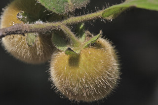
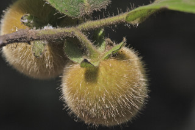

Trees up to 10 m tall.
10 ಮೀ. ಎತ್ತರದವರೆಗೆ ಬೆಳೆಯುವ ಮರಗಳು.
10 മീറ്റര് വരെ ഉയരത്തില് വളരുന്ന മരങ്ങള്.
மரம், 10 மீ. உயரம் வரை வளரக்கூடியது.
Bark black, smooth; blaze pale red.
ತೊಗಟೆ ಕಪ್ಪಾಗಿದ್ದು ನಯವಾಗಿರುತ್ತದೆ;ಕಚ್ಚು ಮಾಡಿದ ಜಾಗ ಮಂದವಾದ ಕೆಂಪು ಬಣ್ಣ ಹೊಂದಿರುತ್ತದೆ.
കറുത്തതും, മിനുസമാര്ന്നതുമായ പുറംതൊലി; വെട്ടുപാടിന് പിങ്ക്നിറം.
மரத்தின் பட்டை கருப்பு நிறமுடையது, வழுவழுப்பானது, உள்பட்டை வெளிறிய சிவப்பு நிறமுடையது.
Branchlets densely long (to 0.25 cm) hairy.
ಕಿರುಕೊಂಬೆಗಳು ದಟ್ಟವಾದ ಹಾಗೂ ಉದ್ದವಾದ (0.25 ಸೆ.ಮೀ.) ಕೂದಲುಗಳನ್ನು ಹೊಂದಿರುತ್ತವೆ.
നീളമേറിയ (0.25 സെ.മീ വരെ) രോമങ്ങള് കനത്തില് നിറഞ്ഞ ഉപശാഖകള്.
சிறிய நுனிக்கிளைகள் அடர்த்தியானது, உரோமங்களுடையது.
Leaves simple, alternate, distichous; petiole 0.2-0.4 cm long, stout, densely hirsute; lamina 5-14 x 2.2-6 cm oblong or oblanceolate, apex bluntly acute to acuminate, base rounded to subcordate, subcoriaceous, densely soft hairy on both surface when young, later become glabrous above except on midrib; secondary_nerves 6-11 pairs; tertiary_nerves broadly reticulate.
ಎಲೆಗಳು ಸರಳವಾಗಿದ್ದು ಪರ್ಯಾಯ ಹಾಗೂ ಸುತ್ತು ಜೋಡನಾ ವ್ಯವಸ್ಥೆ ಯಲ್ಲಿದ್ದು ಕಾಂಡದ ಎರಡೂ ಕಡೆಯ ಎದುರು ಬದರಿನ ಸಾಲಿನಲ್ಲಿರುತ್ತವೆ; ಎಲೆ ತೊಟ್ಟುಗಳು 0.2 -0.4 ಸೆಂ. ಮೀ.ಉದ್ದವಿದ್ದು ದೃಢವಾಗಿದ್ದು, ದಟ್ಟ ಒರಟು ರೋಮಗಳಿಂದ ಕೂಡಿರುತ್ತವೆ; ಪತ್ರಗಳು 5 – 14 X 2.2 – 6 ಸೆಂ.ಮೀ. ಗಾತ್ರ, ಚತುರಸ್ರ ಅಥವಾ ಬುಗುರಿ-ಭರ್ಜಿವರೆಗಿನ ಆಕಾರ ಹೊಂದಿದ್ದು ಮೊಂಡು-ಚೂಪು ಮಾದರಿಯಿಂದ ಕ್ರಮೇಣ ಚೂಪಾಗುವ ತುದಿ , ದುಂಡಾದುದರಿಂದ ಉಪ-ಹೃದಯಾಕಾರದ ಬುಡ, ಉಪ-ಕಾಗದವನ್ನೋಲುವ ಮೇಲ್ಮೈ ಹೊಂದಿರುತ್ತವೆ ;ಪತ್ರ ಎಳೆಯದಾಗಿದ್ದಾಗ ಎರಡೂ ಬದಿಯಲ್ಲಿ, ದಟ್ಟವಾಗಿ ಮೃದುವಾದ ರೋಮಗಳಿಂದ ಕೂಡಿದ್ದು ನಂತರ ಮಧ್ಯನಾಳ ಹೊರತು ಪಡಿಸಿ ಮಿಕ್ಕೆಲ್ಲಾ ಭಾಗಗಳು ರೋಮರಹಿತವಾಗಿರುತ್ತವೆ. ಎರಡನೇ ದರ್ಜೆಯ ನಾಳಗಳು 6 -11 ಜೋಡಿಗಳಿರುತ್ತವೆ;ಮೂರನೇ ದರ್ಜೆಯ ನಾಳಗಳು ವಿಶಾಲ ಜಾಲಬಂಧ ನಾಳ ವಿನ್ಯಾಸ ಹೊಂದಿರುತ್ತವೆ.
ലഘുവായ ഇലകള്, ഏകാന്തരമായി, തണ്ടിന്റെ രണ്ടുഭാഗത്തുമാത്രമായി അടുക്കിയിരിക്കുന്നു; കനത്തില് രോമാവൃതമായ, ദൃഢമായ ഇലഞെട്ടിന് 0.2 സെ.മീ മുതല് 0.4 സെ.മീ വരെ നീളം; പത്രഫലകത്തിന് 5 സെ.മീ മുതല് 14 സെ.മീ വരെ നീളവും 2.2 സെ.മീ മുതല് 6 സെ.മീ വരെ വീതിയും, ആയതാകൃതിയോ അപകുന്താകൃതിയോ ആണ്, മുനപ്പില്ലാത്ത നിശിതാഗ്രം മുതല് ദീര്ഘാഗ്രംവരെയും, പത്രാധാരം വൃത്താകാരം തൊട്ട് ഉപഹൃദയാകാരം വരെയാണ്, ഉപചര്മ്മില പ്രകൃതം, ഇളതായിരിക്കുമ്പോള് ഇരുഭാഗത്തും കനത്തില് മൃദുരോമങ്ങള് നിറഞ്ഞതാണ്, പിന്നീട് മുകളില് മുഖ്യസിരയൊഴികെ അരോമിലമാണ്; 6 മുതല് 11 വരെ ജോഡി ദ്വിതീയ ഞരമ്പുകള്; വീതിയേറിയ ജാലിതമായ ത്രിതീയ ഞരമ്പുകള്.
இலைகள் தனித்தவை, மாற்றுஅடுக்கமானவை, இருநெடுக்கு வரிசையிலையடுக்கம் (டைஸ்டிக்கஸ்); இலைக்காம்பு 0.2-0.4 செ.மீ. நீளமானது, தடித்தது, அடர்ந்த உரோமங்களுடையது; இலை அலகு 5-14 X 2.2-6 செ.மீ., நீள்சதுர வடிவமுடையது, அலகின் நுனி கூரியது முதல் வால் போன்று நீண்டது, அலகின் தளம் வட்டமானது முதல் சிறு இதய வடிவானது, (சப்கார்டேட்), சப்கோரியேசியஸ், புதிய இலைகளில் இருபரப்பிலும் அடர்த்தியான மென்உரோமங்களுடையது, முதிர்ந்த இலைகள் உரோமங்களற்றது, மையநரம்பில் மட்டும் உரோமங்கள் காணப்படும்; இரண்டாம் நிலை நரம்புகள் 6-11 ஜோடிகள்; மூன்றாம் நிலை நரம்புகள் பரந்த வலைப்பின்னல் அமைப்பு கொண்டது.
Flowers unisexual; female flowers clusters of 1-3, axillary.
ಹೂಗಳು ಏಕ ಲಿಂಗಿಗಳಾಗಿರುತ್ತವೆ; ಹೆಣ್ಣು ಹೂಗಳು ಅಕ್ಷಾಕಂಕುಳಿನಲ್ಲಿ, 1 ರಿಂದ 3 ಹೂಗಳುಳ್ಳ ಗುಚ್ಛಗಳಲ್ಲಿರುತ್ತವೆ.
പൂക്കള് ഏകലിംഗികളാണ്; പെണ്പൂക്കള് 1 മുതല് 3 വരെ എണ്ണമുളള കക്ഷീയ കൂട്ടിങ്ങളായുണ്ടാകുന്നു.
ஓர்பால் மலர்கள்; பெண்மலர்கள் 1-3 கொத்தாக இலைக்கோணங்களில் காணப்படுபவை.
Berry, conical or ellipsoid-ovate with dense rufous bristles; fruiting_calyx_lobes oblong; seeds 3-4.
ಬೆರ್ರಿಗಳು ಶಂಖು ಅಥವಾ ಅಂಡವೃತ್ತ – ಅಂಡಾಕಾರ ಹೊಂದಿದ್ದು ಕೆಂಗಂದು ಬಣ್ಣದ ಬಿರುಗೂದಲುಗಳಿಂದ ಕೂಡಿರುತ್ತವೆ; ಕಾಯಿಗಳ ಪುಷ್ಪಪಾತ್ರೆಯ ದಳಗಳು ಚತುರಸ್ರಾಕಾರದಲ್ಲಿರುತ್ತವೆ;ಬೀಜಗಳು 3 ರಿಂದ 4.
മൂന്നോ നാലോ വിത്തുകളുളള കായ, കനത്തില് റൂഫസ് കുറ്റിരോമങ്ങള് നിറഞ്ഞ കോണാകാരത്തിലോ, ദീര്ഘവൃത്തീയ-അണ്ഡാകാരത്തിലോ ഉളള ബെറിയാണ്; കായോട് ചേര്ന്നു നില്ക്കുന്ന ബാഹ്യദളങ്ങള് ആയതാകാരത്തിലാണ്.
முழுச்சதைகனி (பெர்ரி), கூம்பு அல்லது நீள்வட்டம்-முட்டை வடிவமுடையது மற்றும் அடர்ந்த ஊசி போன்ற உரோமங்களுடையது; பழத்தின் நிரந்தரமான புல்லி இதழ்கள் நீள்சதுரமானது; விதைகள் 3-4


 
